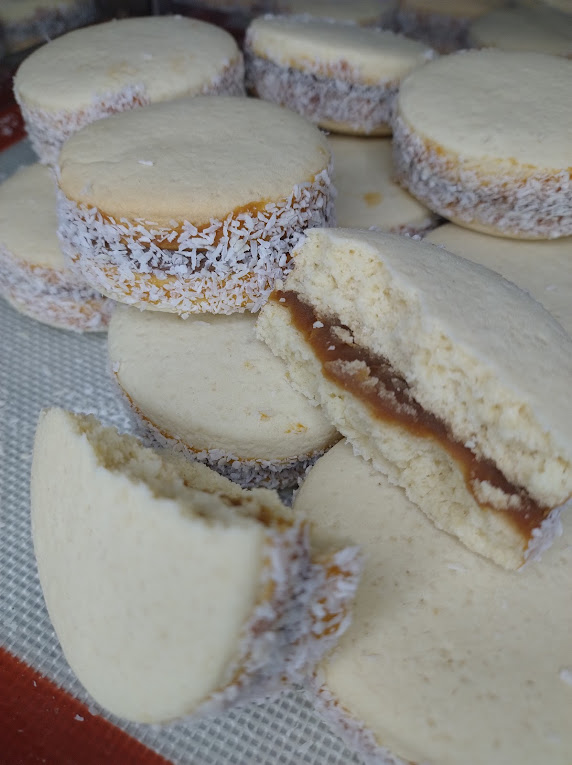

nuestros productos

Glasé Real
Galleta decorada con glaseado firme y brillante, ideal para diseños personalizados y ocasiones especiales.

New York
Galleta grande, suave por dentro y crocante por fuera, rellena o cargada con chips de chocolate o dulce de leche.

Mini New York
Versión mini de la clásica cookie New York: suave por dentro, crocante por fuera y ¡llena de sabor!

Alfajor de Maicena
Clásico alfajor con tapas suaves de maicena, relleno de dulce de leche y bordes con coco rallado.